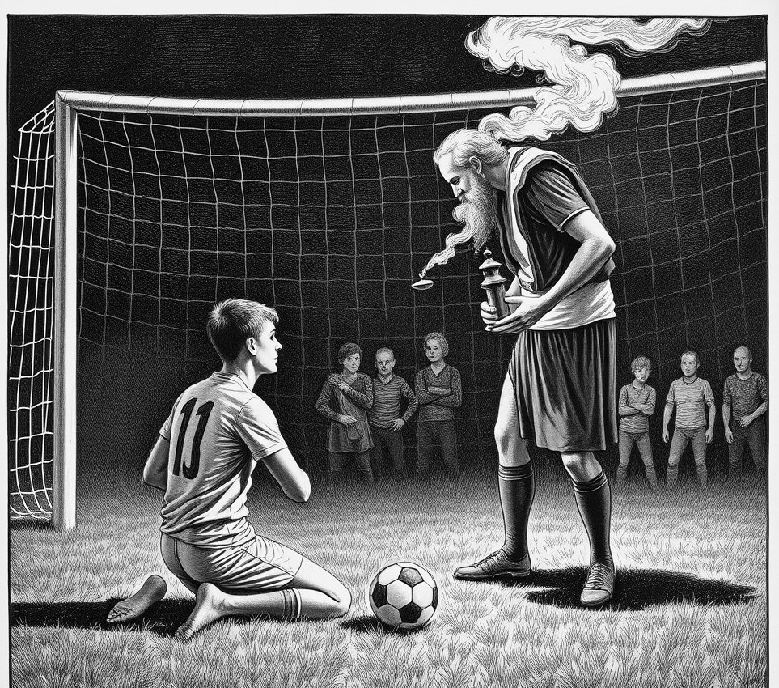

Hermitage of St Brendan . 14 July 2079

Brother Thaddeus, the former St Jude Athletic goalkeeper who successfully had his six-yard box declared a consecrated sanctuary of holy refuge, has died at his orbital monastery aged 88.
Born Gary Kowalski in Leeds, he spent seven unremarkable seasons conceding soft headers before taking monastic vows in 2054. Realising canon law predated the International Football Association Board by several centuries, Kowalski ritually anointed his posts with chrism oil, establishing his penalty area as an altar of inviolable peace.
The tactical consequences were immediate. Opposing strikers entering the box were required to remove their boots, extinguish all warlike intent, and formally request asylum from the parish. Attempting to strike a ball without unlacing was deemed a mortal sin, prompting referees to award immediate free kicks to prevent spiritual hazard. During a pivotal 2058 derby, forward Tariq Al-Mansoor spent fourteen minutes kneeling in wet turf, waiting for Kowalski to light incense before taking a penalty. "The grass was freezing," Al-Mansoor said later, "but his Latin was impeccable, and nobody wished to risk eternal damnation over an equaliser."
The defining turn in Kowalski's career came when the Synod clarified the doctrine of holy hospitality: once asylum was requested, the sanctuary was obligated to shelter all who entered, including the ball. Kowalski spent his remaining seasons dutifully guiding opposition shots into his own net with profound liturgical grace, finishing his career with a save percentage of zero and thirty-two divine commendations.
He retired quietly to this deep-space hermitage to tend hydroponic candles. In accordance with his final wishes, Kowalski will be buried beneath his old crossbar, provided the gravedigger remembers to remove his boots before stepping into the six-yard box.